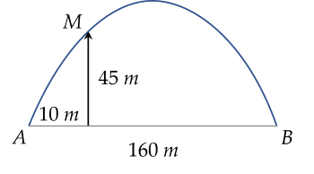

Câu 13. Đại số
Phần II — Trắc nghiệm đúng hoặc sai
1,64 điểm
Cho $f(x)=x^2 - 6x+8.$
(Nhấp vào ô màu vàng để chọn đúng / sai)
Mỗi ý a), b), c)… là một phát biểu độc lập: nhấp vào ô để chọn Đúng/Sai,
0,41 điểm mỗi ý.
Câu 14. Hình họcKhông vẽ hình
Phần II — Trắc nghiệm đúng hoặc sai
1,64 điểm
Trong mặt phẳng tọa độ $Oxy,$ cho tam giác $ABC$ với $A(1;\,1 )$ , $B(0;\,-2 )$ , $C(4;\,2 )$ . Gọi $H$ là chân đường cao kẻ từ $A$ xuống $BC.$
(Nhấp vào ô màu vàng để chọn đúng / sai)
Mỗi ý a), b), c)… là một phát biểu độc lập: nhấp vào ô để chọn Đúng/Sai,
0,41 điểm mỗi ý.
Câu 15. Hình họcCó vẽ hình
Phần III — Trắc nghiệm trả lời ngắn
0,84 điểm
Cổng vào miền Tây (Gateway Arch) ở thành phố St. Louis, nước Mỹ, có hình dạng là một phần của parabol như hình vẽ. Khoảng cách giữa $2$ chân cổng $AB = 160$ m. Trên thành cổng, tại vị trí có độ cao $45$ m so với mặt đất (tại điểm $M$ ), người ta thả một sợi dây chạm đất (dây căng thẳng theo phương vuông góc với đất). Vị trí chạm đất của đầu sợi dây này cách chân cổng $A$ một đoạn $10$ m. Hãy tính khoảng cách từ mặt đất đến điểm cao nhất của cổng (kết quả làm tròn đến hàng đơn vị của mét).

Trả lời ngắn — gõ kết quả, kèm đơn vị nếu đề hỏi đơn vị.
Câu 16. Đại số
Phần III — Trắc nghiệm trả lời ngắn
0,84 điểm
Theo Google Maps, sân bay Nội Bài có vĩ độ $21,2°$ Bắc, kinh độ $105,8°$ Đông, sân bay Đà Nẵng có vĩ độ $16,1°$ Bắc, kinh độ $108,2°$ Đông. Một máy bay, bay từ Nội Bài đến sân bay Đà Nẵng. Tại thời điểm $t$ giờ, tính từ lúc xuất phát, máy bay bay ở vị trí có vĩ độ $x°$ Bắc, kinh độ $y°$ Đông được tính theo công thức $\left\{ \begin{aligned} & x=21,2+\dfrac{135}{40}t \\ & y=105,8+\dfrac{9}{5}t \end{aligned} \right.$ . Hỏi chuyến bay từ Hà Nội đến Đà Nẵng mất mấy giờ? (kết quả viết dưới dạng số thập phân và làm tròn đến hàng phần mười)
Trả lời ngắn — gõ kết quả, kèm đơn vị nếu đề hỏi đơn vị.